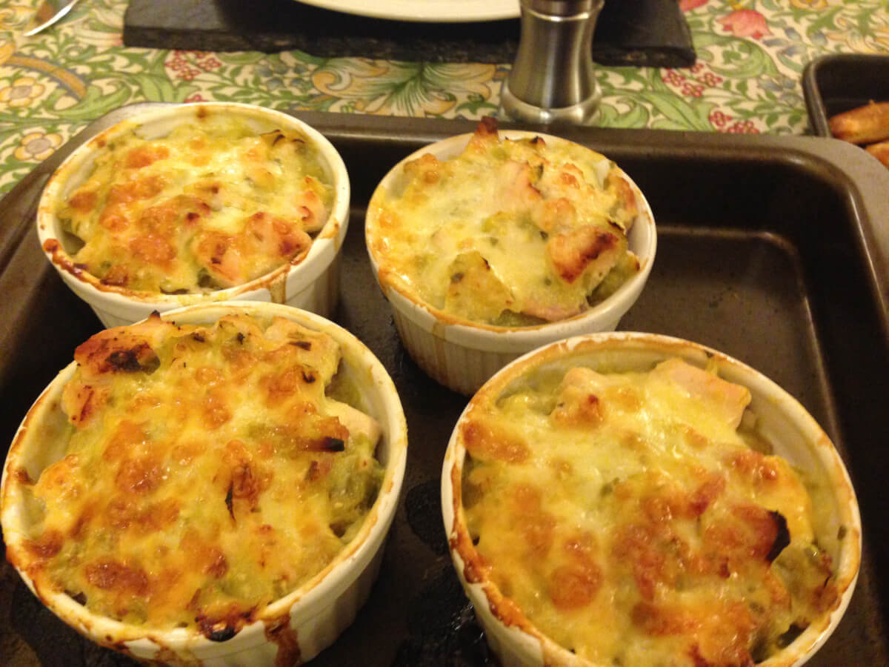

Chicken and Tarragon Pots

The Hairy Bikers Creamy Chicken and Tarragon Pots is an ideal winter comfort food dish.
This is a great dish for those cold, dark winter nights. Prep time is 20 minutes with 45 minutes cooking time.
231 calories per portion, serves 3
Ingredients
- 1 tsp olive oil
- 2 medium leeks trimmed and sliced into 5mm rings
- 2 garlic cloves, crushed
- 3 rashers of lean, smoked bacon
- 2 boneless, skinless chicken breasts
- 200ml chicken stock
- small bunch of fresh tarragon or 1 tsp of dried tarragon
- 2 tbsp low fat creme fraiche
- 30g reduced fat mature cheddar cheese, grated
- freshly ground black pepper
Steps
- Preheat oven to 200C/Fan 180C/Gas 6, place large non-stick frying pan over medium heat
- Add olive oil and leek slices and cook for 3 minutes until leek starts to soften, add crushed garlic and cook for 2 more minutes
- Trim fat from bacon and chicken, then dice meat. Add to pan with leeks, stir and cook over moderate heat for 5-10 minutes
until chicken is no longer pink.
- Add stock to the pan and reduce heat slightly, cook for 10 minutes until almost all stock has reduced and leeks are completely soft.
- Turn heat right down, add tarragon and creme fraiche then cook for 2 more minutes. Season with good grind of pepper
- Spoon mixture into ramekins and top with grated cheese. Place pots on baking tray and cook in oven for 15 minutes. Allow to cool for
a couple of minutes before serving.